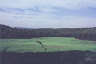
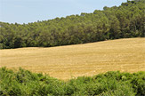
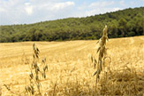

|
La pagesia catalana:
els Mansus com Can Borrell
Can Borrell és una de les masies que ha tingut una llarga tradició agrícola i rural al llarg dels segles. En són una bona mostra els camps de conreu que envolten la finca. Un d'ells, considerat dels més grans en el conjunt agrícola situat dins l'àmbit del Parc de Collserola.
La pagesia lliga estretament prats de pastura amb camps de conreu, ramaderia amb agricultura. La proximitat del bosc també facilita fusta per obrar els embigats, balconades, i recursos energètics com llenya i carbó vegetal, així com aliments com ara els bolets, espàrrecs, pinyons, castanyes i peces de caça.

En l'afany del pagès per guanyar terres de conreu al bosc, les clarianes cultivables tendiren a unir-se formant grans camps com els que tenim a Can Borrell. Les cases de pagès s'adaptaren a les necessitats de la producció agrària. S'afegiren elements que es van fer imprescindibles com ara les basses, graners, corrals i altres construccions que facilitaven les dures tasques del camp.
La situació relativament benèvola que durant un temps van viure els masos, canvià a la primera meitat del segle XI. Els pagesos es veien sotmesos a la pressió de nobles i a l'atracció dels grans monestirs com el de Sant Cugat. Havien d'escollir protectors que els semblessin menys amenaçadors. La masia de Can Borrell però, és de les poques amb les quals no es pot relacionar una submissió directa a l'hegemonia del comtat barceloní que en aquells moments, s'escampava per arreu. Al Comte de Barcelona Ramon Borrell II i la seva esposa Ermesenda de Carcasona, se li van acabar venent fins i tot, alguns béns del propi Monestir, segons consta al Cartulari de l'any 1013. Aquest fet però, ens permet saber de l'existència del Mas Borrell a la Vall de Gausac, ja al segle XI.
|
|